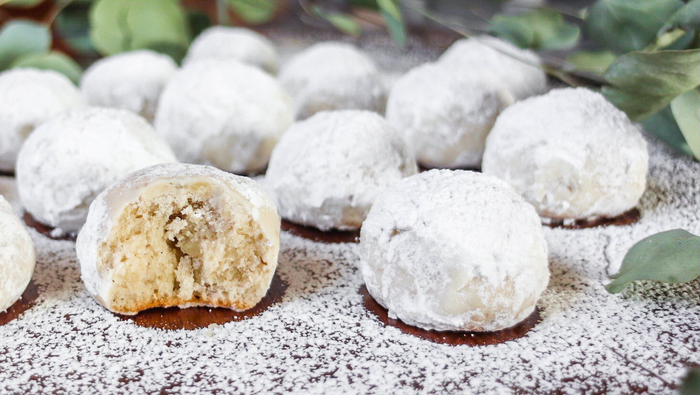

Russian Tea Cakes
Servings: 28 to 32 cookies
As the old joke goes, these Russian tea cakes might not be Russian, but at least they're not cakes. No one knows exactly how these came to be known as Russian tea cakes but, nevertheless, they are quite delicious.

Ingredients
1 cup unsalted butter, room temperature
1⅓ cups confectioners' sugar, divided
1 cup finely chopped toasted walnuts
1 teaspoon vanilla extract
2 tablespoons all-purpose flour
1 cup confectioners' sugar for dusting, or more as needed